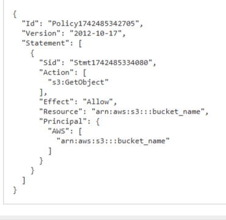
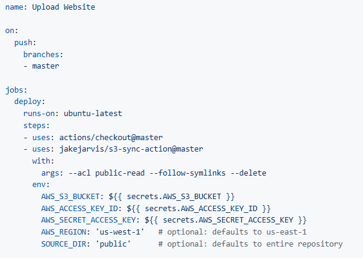

Welcome! In this guide, I’ll walk you through the steps I took to host this static website using Amazon S3 and set up a continuous integration and deployment (CI/CD) pipeline using GitHub. This project is part of my learning journey as I explore AWS and build my cloud portfolio.
Step-by-Step Guide: Hosting a Website with Amazon S3 and CI/CD
-
Create an S3 Bucket
I started by creating an Amazon S3 bucket. This is where all the website files (HTML, CSS, JavaScript) are stored.
-
Upload Website Files
After creating the bucket, I uploaded the website files to the bucket, including this page you’re reading now!
-
Enable Static Website Hosting
I enabled Static Website Hosting in the bucket’s properties. This turns the S3 bucket into a public-facing website that anyone can access.
-
Set Permissions
To make the site public, I had to set permissions in the S3 bucket policy, allowing users to view my website by accessing the files in the bucket. I used the aws policy generator to generate the "s3:GetObject" policy.
 -
Set Up Continuous Integration/Deployment (CI/CD)
After deploying the website, I initiated a CI/CD pipeline using GitHub. Now, anytime I push changes to my GitHub main branch, the website in the S3 bucket is automatically updated.
- Created an IAM User: I created a user in AWS and attached the AmazonS3FullAccess policy to grant the necessary permissions for accessing and updating the S3 bucket.
- Generated Access Keys: I generated an access key and secret key for the user.
- Configured GitHub: I added the access keys to my GitHub repository as secrets, allowing GitHub to interact with my S3 bucket securely.
- Created a Workflow File: I wrote a workflow YAML file in GitHub that defines what happens whenever I push changes to the main branch. This file triggers the automatic deployment to the S3 bucket. 
-
Access the Website
Once the setup was done, I got a public URL from AWS where the site is hosted. This is where you are reading this guide!
What I’ve Learned and demonstrated:
- Amazon S3 Basics: I learned how to create an S3 bucket and upload files.
- Static Website Hosting: I understood how AWS S3 can host static websites without a need for servers.
- Bucket Policies: I configured permissions using bucket policies to control access.
- CI/CD with GitHub: I implemented a CI/CD pipeline to automatically deploy updates to the S3 bucket whenever I push changes to GitHub. This improves the workflow by automating deployments.
- IAM and Security: I gained experience in creating IAM users, managing access keys, and securely integrating GitHub with AWS.
This is just the beginning of my AWS learning journey. Stay tuned for more projects as I explore AWS services and cloud computing.